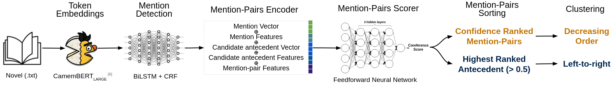

Annotating a new dataset
Why Annotating a New Dataset ?
The entity types you are interested in are not annotated in the Available Dataset.
The language you are interested in is not available.
Creating a new dataset from scratch.
-
Constitute a Corpus of text files
You need to gather one or multiple files to be annotated in the .txt format.
Example
Let's say we are interested in training a model that detect all mentions referring to animals entities.
To constitute our corpus we might start by the Wikipedia pages related to animals.
animals = ["Dog", "Guinea pig", "Cow", "Lion", "Jellyfish", "Flamingo", "Kangaroo"]
Python Code to Generate the .txt Animals Corpus
import wikipedia, os
def get_wikipedia_text_from_title(url: str) -> str:
# Extract the page title from the URL
title = url.split("/wiki/")[-1]
title = title.replace("_", " ")
# Fetch the page content
page = wikipedia.page(title, auto_suggest=False)
return page.content
corpus_root_path = "./animals_corpus"
os.makedirs(corpus_root_path, exist_ok=True)
animals = ["Dog", "Guinea pig", "Cow", "Lion", "Jellyfish", "Flamingo", "Kangaroo"]
for animal in animals:
title = animal.replace(" ", "_").lower()
filename = title + ".txt"
filepath = os.path.join(corpus_root_path, filename)
text = get_wikipedia_text_from_title(animal)
with open(filepath, "w", encoding="utf-8") as f:
f.write(text)
animals_corpus/
├── cow.txt
├── dog.txt
├── flamingo.txt
├── guinea_pig.txt
├── jellyfish.txt
├── kangaroo.txt
└── lion.txt
Annotation Guidelines: Definition of what is an animal
Animal mention = All mention (Proper Noun, noun phrases, pronouns) referring to a specific species of animal (excluding wider classes: genus, families, orders, etc.)
The definition should be precise and answer all edge cases.
- Should we annotate pronouns ?
- Should we annotate Latin species name (Panthera leo) ?
Annotation Process
Multiple annotation tools exist. For Propp we use SACR
Bruno Oberle. 2018. SACR: A Drag-and-Drop Based Tool for Coreference Annotation. In Proceedings of the Eleventh International Conference on Language Resources and Evaluation (LREC 2018), Miyazaki, Japan. European Language Resources Association (ELRA).
@InProceedings{OBERLE18.178,
author = {Bruno Oberle},
title = "{SACR: A Drag-and-Drop Based Tool for Coreference Annotation}",
booktitle = {Proceedings of the Eleventh International Conference on Language Resources and Evaluation (LREC 2018)},
year = {2018},
month = {May 7-12, 2018},
address = {Miyazaki, Japan},
editor = {Nicoletta Calzolari (Conference chair) and Khalid Choukri and Christopher Cieri and Thierry Declerck and Sara Goggi and Koiti Hasida and Hitoshi Isahara and Bente Maegaard and Joseph Mariani and Hélène Mazo and Asuncion Moreno and Jan Odijk and Stelios Piperidis and Takenobu Tokunaga},
publisher = {European Language Resources Association (ELRA)},
isbn = {979-10-95546-00-9},
language = {english}
}
Before starting the annotation in SACR, you need to define the properties configuration :
Here we only annotate "ANIMAL" entities, but if we wanted to also annotate geopolitical entities (GPE) we would add a new row, one row per entity.
PROP:name=EN
$$$
ANIMAL
GPE
- Open the SACR annotation Home Page
- Load your raw .txt file
- Paste you Properties configuration
- Choose the tokenization type:
word and punctuation - Then click the button to
parse the data - Annotate your entities mention spans boundaries
- Select entity type
- Link coreferential mentions
- Name your coreference chain (select a mention and press
n) - Save your annotated file (press
w) Save regularly to avoid losing annotations
test
